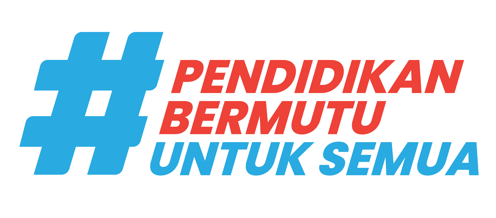

Direktorat Jenderal
Pendidikan Anak Usia Dini,
Pendidikan Dasar, dan
Pendidikan Nonformal dan Informal
Pendidikan Anak Usia Dini,
Pendidikan Dasar, dan
Pendidikan Nonformal dan Informal




Teknologi untuk Mengolah Data
Pada kegiatan ini, siswa belajar bahwa data mentah perlu diatur agar mudah dibaca komputer. Python dipakai sebagai alat bantu untuk memisahkan data, mencari nilai penting, menyaring informasi, dan menampilkan hasil secara otomatis.
Belajar Python dari masalah data yang dekat dengan kehidupan siswa
Petugas kantin sekolah mencatat stok barang dan harga dalam satu catatan panjang yang masih campur-baur. Komputer tidak bisa langsung mengolah data seperti ini — nama barang dan angka harga perlu dipisah, dicari polanya, disaring, lalu ditampilkan secara otomatis.
Tugasmu: bantu selesaikan masalah ini menggunakan Python, selangkah demi selangkah!
1. Di lab ini kamu tidak mengetik bebas — cukup pilih komponen kode yang paling tepat.
2. Klik kotak kosong di area kode, lalu pilih komponen dari panel tengah.
3. Jika bingung, gunakan tombol Petunjuk Misi di panel misi untuk mendapat arahan.
4. Selesaikan semua tahap untuk mendapatkan sertifikat!
Tulis jawabanmu untuk memperkuat pemahamanmu. Tidak ada jawaban yang salah!
Klik baris kode yang kamu anggap mengandung bug!
Baca kode berikut, lalu tebak apa output yang akan muncul di terminal!
Animasi ini menunjukkan bagaimana Python memeriksa setiap elemen untuk menemukan nilai terbesar (max).
max() bekerja di balik layar.
Silakan baca terlebih dahulu bagian Tujuan Praktikum dan Cara Penggunaan sebelum memulai percobaan.